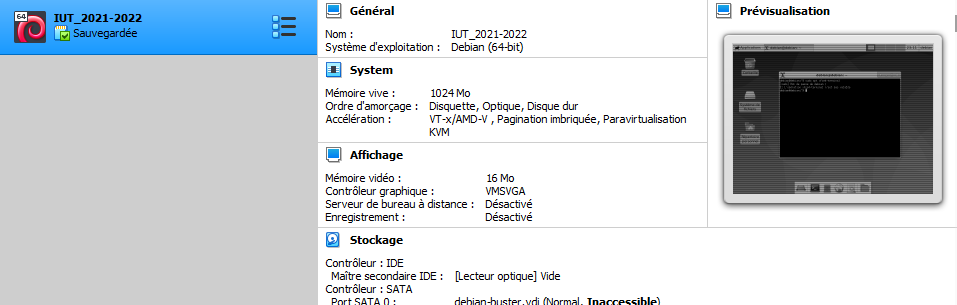
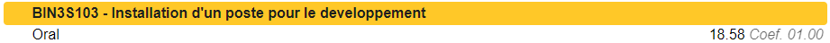
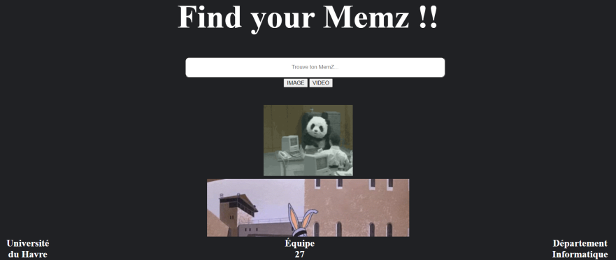

Dans cette SAE, nous avons du mettre en place une machine virtuel sous debian de A à Z, on est partie d’une interface CUI qui étant en qwerty avec un simple compte root à une machine en GUI avec tout les logiciel utilitaire pour un informaticien (Libre office, la connexion à internet, la liaison avec un fichier partagé etc…)
J’ai pour ma part eu une très bonne note à cette SAE 18/20 pour la machine que j’ai mis en place.
J’ai aussi effectué 3 fois la mise en place de la machine virtuel en l'instalent sur mon ordinateur portable, mon ordinateur fixe tout en aidant des camarades de classe


Nous avons eu la liberté de faire ce que l’on veut pour cette SAE, la seul contrainte que nous avons eu est l’utilisation de conteneur avec Docker.
Docker à pour principe de faire des test pour voir si notre site peut être mise en place plus tard sur un serveur à distance.
J’ai réalisé la totalité du docker file qui nous à permit de lancer notre site internet «Find your memz »
Liens vers le dockerFile

Travaillent constament sur un ordinateur depuis plus de 10ans maintenent, Je sais bien maitrisé un ordinateur sur Windows, c’est raccourci est sont fonctionnement.
c’est depuis cette année que j’apprend à utilisé Linux ce qui me plait à comprendre, meme si il à des similitude en c’est 2 système d’exploitation j’ai mes préférence à utilisé linux
Comme nous avons principalement travaillé sur des machine virtuel ou bien des conteneur, tout nos infrastructure on était protégé par un mot de passe
(Machine virtuel : mise en place de plusieur profil utilisateur compte superadministateur et un profil utilisateur)
(conteneur Docker: Avec le mots de passe de la machine utilisateur)